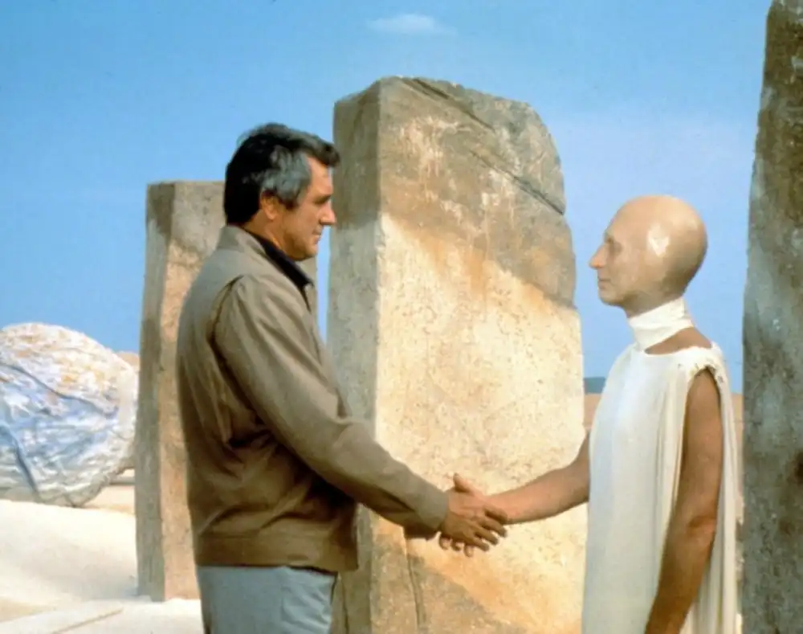
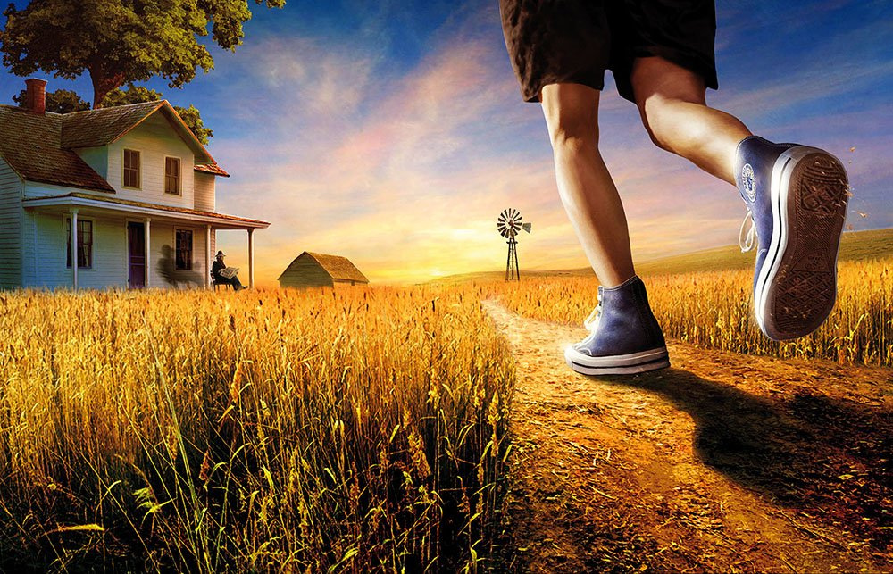

The Martian Chronicles
A Martian woman has dreams of a rocket coming down from the sky, containing a light-skinned, blue-eyed creature named Nathaniel York. Her husband is weary, and when the rocket lands, he shoots the men. All over Mars, people begin to hum Earth tunes and have strange dreams. When a second rocket lands, the astronauts get out and explore. They say they are from Earth, but everyone thinks they are crazy people who have hallucinated their rocket. Thus, they are all shot by a psychologist. Meanwhile, on Earth, a crazed taxpayer tries to board the third rocket to Mars, but he is denied. When it lands, the astronauts find themselves in an ideal small American town. They meet their dead relatives and split up to have dinner with lost parents and brothers. Captain John Black goes to bed next to his long-lost brother, only to realize that it is probably all a Martian trap. His "brother" kills him before he can leave the room.
A year later, a fourth expedition lands, and it is successful. Almost all the Martians have died of chicken pox, apparently acquired from one of the previous expeditions. Captain Wilder lets his men drink and dance, but this angers the archaeologist in the crew, Jeff Spender. Spender feels humbled by the great Martian civilization and wants the rest of the crew to be dignified. He goes crazy and tries to kill the crew; Wilder reasons with him and is somewhat sympathetic, but finally has to shoot him.
Settlers begin to arrive on Mars, drawn by the promise of work. Benjamin Driscoll's job is to plant trees. One morning, after it finally rains, he turns around and sees that the once-barren landscape is now covered with green. Another settler, Toma's Gomez, experiences an even stranger event when, in the middle of nowhere, he runs into a Martian. They cannot touch each other, seeming to exist on different time-planes.
The Sound of Summer Running
Late that night, going home from the show with his mother and father and his brother Tom, Douglas saw the tennis shoes in the bright store window. He glanced quickly away, but his ankles were seized, his feet suspended, then rushed. The earth spun; the shop awnings slammed their canvas wings overhead with the thrust of his body running. His mother and father and brother walked quietly on both sides of him. Douglas walked backward, watching the tennis shoes in the midnight window left behind.
"It was a nice movie," said Mother. Douglas murmured, "It was. . . ."
It was June and long past time for buying the special shoes that were quiet as a summer rain falling on the walks. June and the earth full of raw power and everything everywhere in motion. The grass was still pouring in from the country, surrounding the sidewalks, stranding the houses. Any moment the town would capsize, go down and leave not a stir in the clover and weeds. And here Douglas stood, trapped on the dead cement and the red-brick streets, hardly able to move. “Dad!" He blurted it out. "Back there in that window, those Cream-Sponge Para Litefoot Shoes . . ." His father didn’t even turn. "Suppose you tell me why you need a new pair of sneakers. Can you do that?"
"Well . . ."
It was because they felt the way it feels every summer when you take off your shoes for the first time and run in the grass. They felt like it feels sticking your feet out of the hot covers in wintertime to let the cold wind from the open window blow on them suddenly and you let them stay out a long time until you pull them back in under the covers again to feel them, like packed snow. The tennis shoes felt like it always feels the first time every year wading in the slow waters of the creek and seeing your feet below, half an inch further downstream, with refraction than the real part of you above water.
"Dad," said Douglas, "it’s hard to explain."
Somehow the people who made tennis shoes knew what boys needed and wanted. They put marshmallows and coiled springs in the soles and they wove the rest out of grasses bleached and fired in the wilderness. Somewhere deep in the soft loam of the shoes the thin hard sinews of the buck deer were hidden. The people that made the shoes must have watched a lot of winds blow the trees and a lot of rivers going down to the lakes. Whatever it was, it was in the shoes, and it was summer. Douglas tried to get all this in words. “Yes,” said Father, "but what’s wrong with last year’s sneakers? Why can’t you dig them out of the closet?"
Well, he felt sorry for boys who lived in California where they wore tennis shoes all year and never knew what it was to get winter off your feet, peel off the iron leather shoes all full of snow and rain and run barefoot for a day and then lace on the first new tennis shoes of the season, which was better than barefoot. The magic was always in the new pair of shoes. The magic might die by the first of September, but now in late June there was still plenty of magic, and shoes like these could jump you over trees and rivers 1 and houses. And if you wanted, they could jump you over fences and sidewalks and dogs.
"Don’t you see?" said Douglas. "I just can’t use last year’s pair."
Fahrenheit 451
Guy Montag is a fireman who burns books in a futuristic American city. In Montag’s world, firemen start fires rather than putting them out. The people in this society do not read books, enjoy nature, spend time by themselves, think independently, or have meaningful conversations. Instead, they drive very fast, watch excessive amounts of television on wall-size sets, and listen to the radio on "Seashell Radio" sets attached to their ears.
Montag encounters a gentle seventeen-year-old girl named Clarisse McClellan, who opens his eyes to the emptiness of his life with her innocently penetrating questions and her unusual love of people and nature. Over the next few days, Montag experiences a series of disturbing events. First, his wife, Mildred, attempts suicide by swallowing a bottle of sleeping pills. Then, when he responds to an alarm that an old woman has a stash of hidden literature, the woman shocks him by choosing to be burned alive along with her books. A few days later, he hears that Clarisse has been killed by a speeding car. Montag's dissatisfaction with his life increases, and he begins to search for a solution in a stash of books that he has stolen from his own fires and hidden inside an air-conditioning vent.
When Montag fails to show up for work, his fire chief, Beatty, pays a visit to his house. Beatty explains that it's normal for a fireman to go through a phase of wondering what books have to offer, and he delivers a dizzying monologue explaining how books came to be banned in the first place. According to Beatty, special-interest groups and other "minorities" objected to books that offended them. Soon, books all began to look the same, as writers tried to avoid offending anybody. This was not enough, however, and society as a whole decided to simply burn books rather than permit conflicting opinions. Beatty tells Montag to take twenty-four hours or so to see if his stolen books contain anything worthwhile and then turn them in for incineration. Montag begins a long and frenzied night of reading.
Overwhelmed by the task of reading, Montag looks to his wife for help and support, but she prefers television to her husband's company and cannot understand why he would want to take the terrible risk of reading books. He remembers that he once met a retired English professor named Faber sitting in a park, and he decides that this man might be able to help him understand what he reads. He visits Faber, who tells him that the value of books lies in the detailed awareness of life that they contain. Faber says that Montag needs not only books but also the leisure to read them and the freedom to act upon their ideas.
Faber agrees to help Montag with his reading, and they concoct a risky scheme to overthrow the status quo. Faber will contact a printer and begin reproducing books, and Montag will plant books in the homes of firemen to discredit the profession and to destroy the machinery of censorship. Faber gives him a two-way radio earpiece (the "green bullet") so that he can hear what Montag hears and talk to him secretly.
How I Did the RWD Styling
I set up the base styles for a smaller screen. The sections are displayed in a column format and no scroll bars. Once the screen width surpasses 800 pixels, the flex-wrap style makes the sections wrap from left to right down the screen. To make all of the sections display at the same level, I enabled overflow-y for scroll bars.